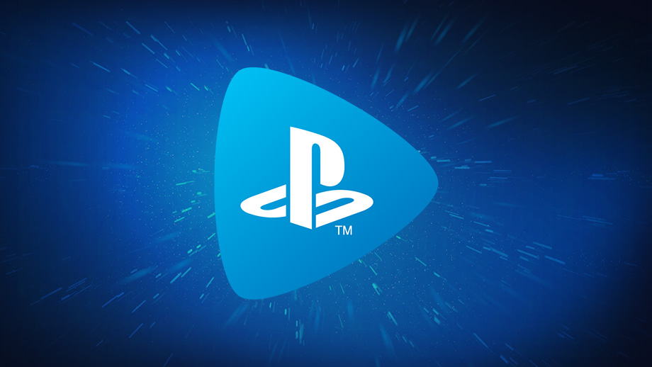
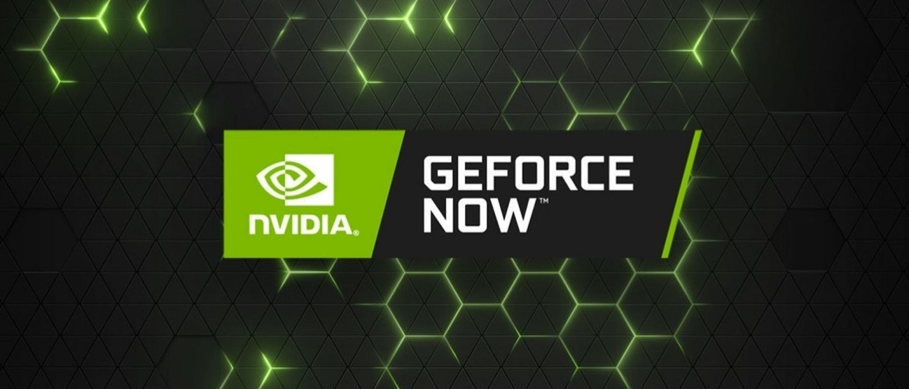

PlayStation Now es el servicio de 'streaming' propio de PlayStation, que llegó a España en marzo de 2019. Esta plataforma ofrece a sus usuarios más de 700 títulos de PS4, PS3 y PS2 disponibles para PS4 y PC con Windows, se irán añadiendo nuevas incorporaciones cada mes. La plataforma permite a sus 'gamers' jugar en 'streaming' aunque también existe una selección de juegos disponibles para descargar y jugar sin conexión.

Apple Arcade
Apple también tiene su propio servicio de juegos en 'streaming'. La compañía lo lanzó el pasado 19 de septiembre en su App Store. En esta plataforma los usuarios que dispongan de un iPhone, iPad, Mac o apple TV podrán acceder a más de 100 títulos como Ballistic Baseball o Overland.
G Force Now
G Force Now es el servicio de juegos en 'streaming' de Nvidia para ordenadores y próximamente también para móviles y tabletas. Este servicio se conecta con plataformas de juegos como Epic Games o Steam para que el usuario compre juegos o juegue a aquellos que ya tiene en su biblioteca personal sin necesidad de un 'hardware' adecuado.

Google Stadia
Google también se ha unido a la tendencia de ofrecer videojuegos en 'streaming' y desde este martes está disponible su plataforma Google Stadia compatible con todo tipo de dispositivos (smartphones, ordenadores, televisores). La peculiaridad de esta plataforma es que el jugador no queda limitado a un 'hardware' concreto, porque todo el potencial estará soportado por los servidores de Google.